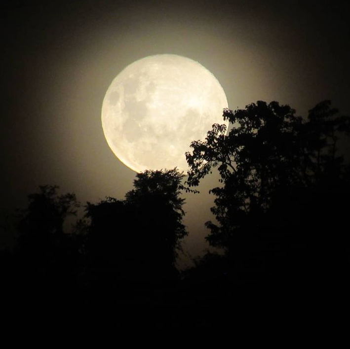
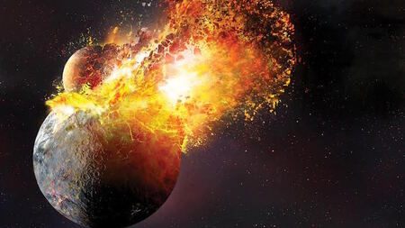
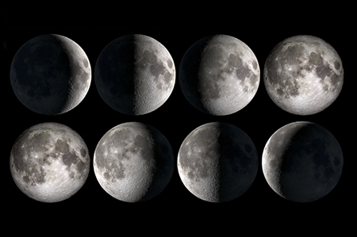
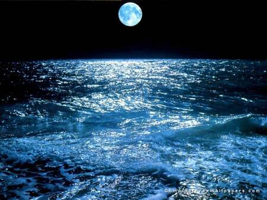
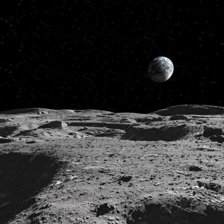

Caminhos da Lua
"O Satélite Natural da Terra"


Jornada dos Visitantes
--------------------------------------
A Formação da Lua
A Lua formou-se há cerca de 4,5 bilhões de anos, pouco após a formação da Terra. A teoria mais aceita é a da Grande Colisão (ou Teoria do Impacto Gigante), que sugere que a Lua se formou a partir dos escombros resultantes da colisão entre a Terra primitiva e um corpo do tamanho de Marte chamado Theia. Essa colisão ejetou uma grande quantidade de material que acabou se agregando para formar a Lua.

Fases da Lua e Eclipses
As fases da Lua são causadas pela sua órbita ao redor da Terra e pela variação na quantidade de luz solar que reflete. A Lua passa por diferentes fases – Nova, Crescente, Cheia e Minguante – com base na sua posição relativa em relação à Terra e ao Sol. Além disso, os eclipses lunares ocorrem quando a Terra se posiciona entre o Sol e a Lua, projetando uma sombra sobre a Lua.

Lua e Marés
A Lua exerce uma influência significativa sobre as marés da Terra devido à sua força gravitacional. A força de atração gravitacional da Lua puxa a água dos oceanos em direção a ela, criando a maré alta. O lado oposto da Terra também experimenta uma maré alta devido à força centrífuga causada pela rotação da Terra e da Lua. Esse fenômeno é crucial para muitos ecossistemas costeiros e para a navegação.

Superfície da Lua
A superfície da Lua é coberta por uma camada de poeira fina e rochosa chamada regolite, que se formou ao longo de bilhões de anos devido ao impacto constante de meteoritos e micrometeoritos. A Lua possui características marcantes, como os maria, grandes planícies basálticas formadas por antigas erupções vulcânicas, e os crateras, resultantes de impactos de meteoritos. As marcas visíveis na superfície, como os mares (marés) e os picos, são testemunhos das diversas fases de sua história geológica.
© 2024 Rafael Maidana